photogallery
.:. places .:. nature .:. life .:. events .:. panoramas .:.
places
 blue hour
blue hour st. jacob in color
st. jacob in color- 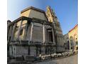 kicked him out of his grave
- 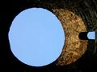 infinity
- 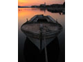 one more day...
 sunny fountain
sunny fountain- 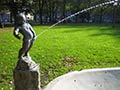 piss
 coffee break
coffee break- 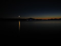 nocturno
 lotrščak tower
lotrščak tower vestibul
vestibul architecture secrets
architecture secrets new year for old town
new year for old town new year's morning
new year's morning- 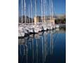 quietness
- 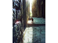 black cat
 fountain
fountain window
window- 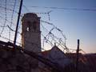 barbed wire
- 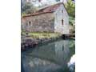 water mill
 dusk
dusk- 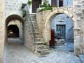 volat
 before the storm
before the storm
 blue hour
blue hour st. jacob in color
st. jacob in color sunny fountain
sunny fountain coffee break
coffee break lotrščak tower
lotrščak tower vestibul
vestibul architecture secrets
architecture secrets new year for old town
new year for old town new year's morning
new year's morning fountain
fountain window
window dusk
dusk before the storm
before the stormnature
 failed
failed valentine's day spring?
valentine's day spring? southern top
southern top- 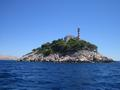 perfect blend
- 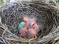 waiting for our brother
- 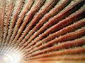 shell
- 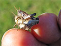 touch of sex
 dandelion
dandelion beautiful fragility
beautiful fragility swallow nestling
swallow nestling- 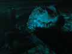 kayman in zagreb
- 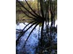 bundek
 eyes
eyes- 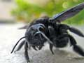 gimme a bite
 pussy cat
pussy cat sunset
sunset springtime together
springtime together- 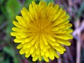 perfect
- attitude
 after the rain
after the rain autumn
autumn
 failed
failed valentine's day spring?
valentine's day spring? southern top
southern top dandelion
dandelion beautiful fragility
beautiful fragility swallow nestling
swallow nestling eyes
eyes pussy cat
pussy cat sunset
sunset springtime together
springtime together after the rain
after the rain autumn
autumnlife
- 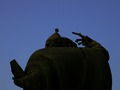 threatening position
 good morning, bishop
good morning, bishop staying together...
staying together... ...in sickness and in health
...in sickness and in health ropes
ropes broken louvre
broken louvre- 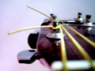 guitar
- 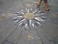 course northwest
- in medias res!
 play with fire
play with fire playing cards
playing cards love story
love story- 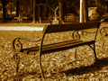 depends on perspective
 simply past
simply past relax
relax prova
prova waiting for my man
waiting for my man- 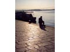 alone
 tiramoli
tiramoli
 good morning, bishop
good morning, bishop staying together...
staying together... ...in sickness and in health
...in sickness and in health ropes
ropes broken louvre
broken louvre play with fire
play with fire playing cards
playing cards love story
love story simply past
simply past relax
relax prova
prova waiting for my man
waiting for my man tiramoli
tiramolievents
 angry
angry colloseum
colloseum time passes
time passes fountain di trevi
fountain di trevi pantheon
pantheon how she sees it
how she sees it- 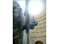 knocking on heaven's door
 oculus
oculus boca della verita
boca della verita- 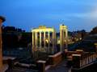 forvm romanum
 window
window wake up call
wake up call tovareća mužika (donkey music)
tovareća mužika (donkey music) evolution circle
evolution circle- 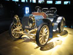 daimler benz
- 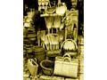 dolac
 indians
indians nocturno for the legend
nocturno for the legend
 angry
angry colloseum
colloseum time passes
time passes fountain di trevi
fountain di trevi pantheon
pantheon how she sees it
how she sees it oculus
oculus boca della verita
boca della verita window
window wake up call
wake up call tovareća mužika (donkey music)
tovareća mužika (donkey music) evolution circle
evolution circle indians
indians nocturno for the legend
nocturno for the legend forvm romanum
forvm romanum king tomislav square
king tomislav square sali
sali split
split{kind=link}
{kind=link}
{kind=link}
{kind=link}
{kind=link}
{kind=link}
{kind=link}
{kind=link}
{kind=link}
{kind=link}
{kind=link}
{kind=link}
{kind=link}
{kind=link}
{kind=link}
{kind=link}
{kind=link}
{kind=link}
{kind=link}
{kind=link}
{kind=link}
{kind=link}
{kind=link}
{kind=link}
{kind=link}
{kind=link}
{kind=link}
{kind=link}
{kind=link}
{kind=link}
{kind=link}